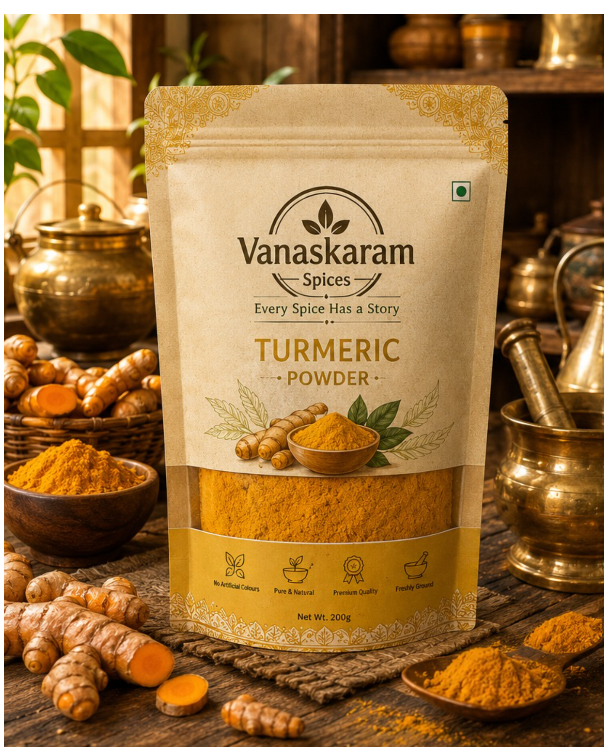
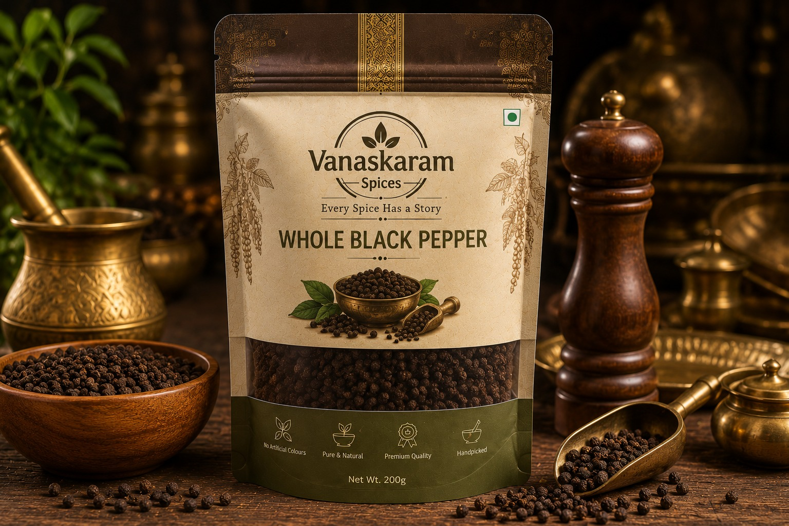
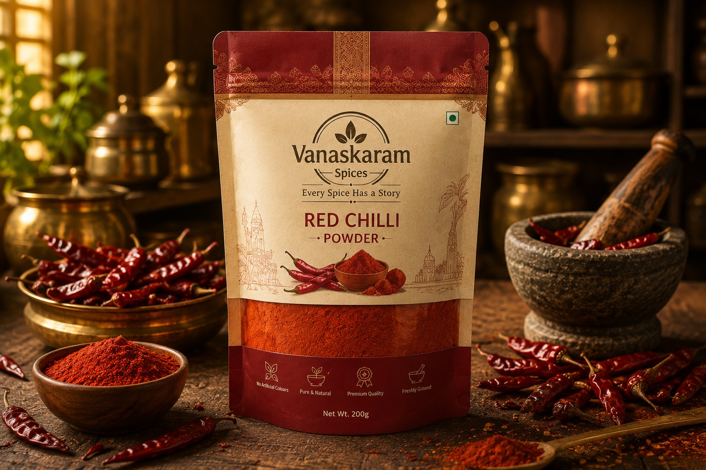

Golden Turmeric Powder
Sourced from trusted farms in Telangana, our turmeric is carefully harvested to preserve its vibrant colour, earthy aroma, and natural goodness—bringing authentic flavour to every meal.
New Harvest Collection Now Available | Explore Authentic Regional Flavours

Behind every meal lies a story of people, places, and traditions. At Vanaskaram, we carefully source regional spices and handcrafted condiments from across India; from the bold black pepper of Kerala and fragrant cardamom of the Western Ghats to the vibrant turmeric of Telangana, fiery Byadgi chillies of Karnataka, and aromatic cumin of Gujarat. Every ingredient reflects generations of farming wisdom, bringing authentic regional flavours and timeless culinary heritage to your kitchen.
Explore Authentic Products
Sourced from trusted farms in Telangana, our turmeric is carefully harvested to preserve its vibrant colour, earthy aroma, and natural goodness—bringing authentic flavour to every meal.

Handpicked from the lush plantations of Kerala, our Malabar black pepper is known for its bold aroma, rich flavour, and exceptional quality, adding warmth to every dish.

Sourced from the fertile fields of Karnataka, Byadgi chillies are prized for their deep red colour and mild heat, enriching dishes with authentic regional character.
"I love that every product comes with a story about where it was sourced. It makes cooking feel more connected to India's regional food traditions."
-Rakul Singh, Punjab
"From the thoughtful packaging to the incredible freshness of the spices, Vanaskaram has become my go-to brand for everyday cooking. Highly recommended!"
-Sneha Kulkarni, Pune
"The aroma of the Malabar black pepper instantly reminded me of home. The freshness and quality are unlike anything I've bought from regular supermarkets."
-Priya, Kerala/p>
"Vanaskaram's turmeric has a rich colour and authentic flavour that makes every dish feel homemade. You can tell the ingredients are carefully sourced."
- Rahul Mehta, Ahmedabad